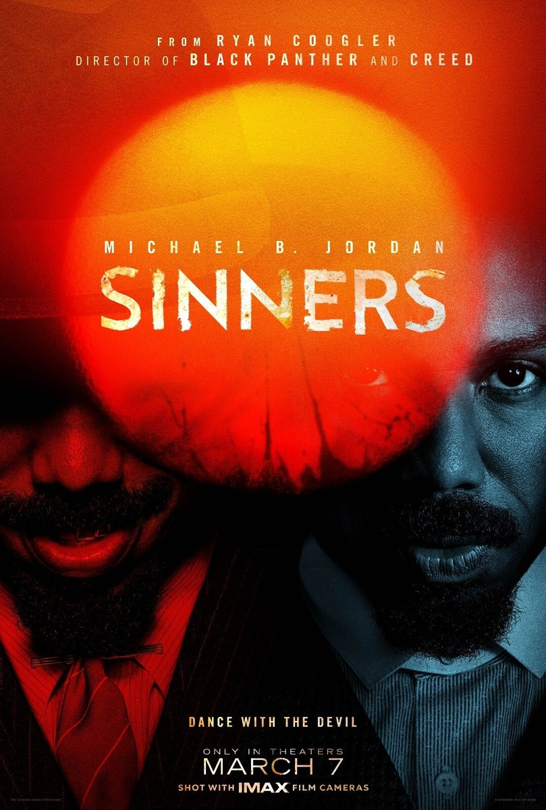
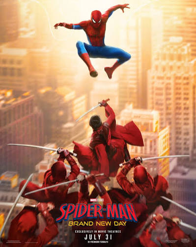
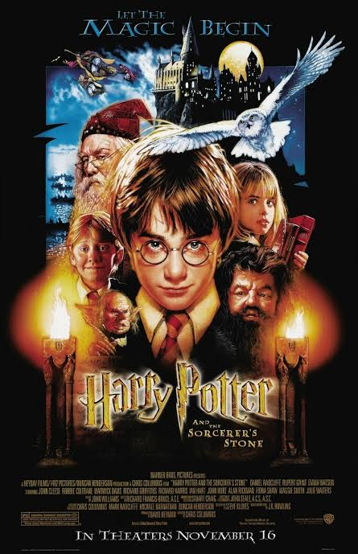
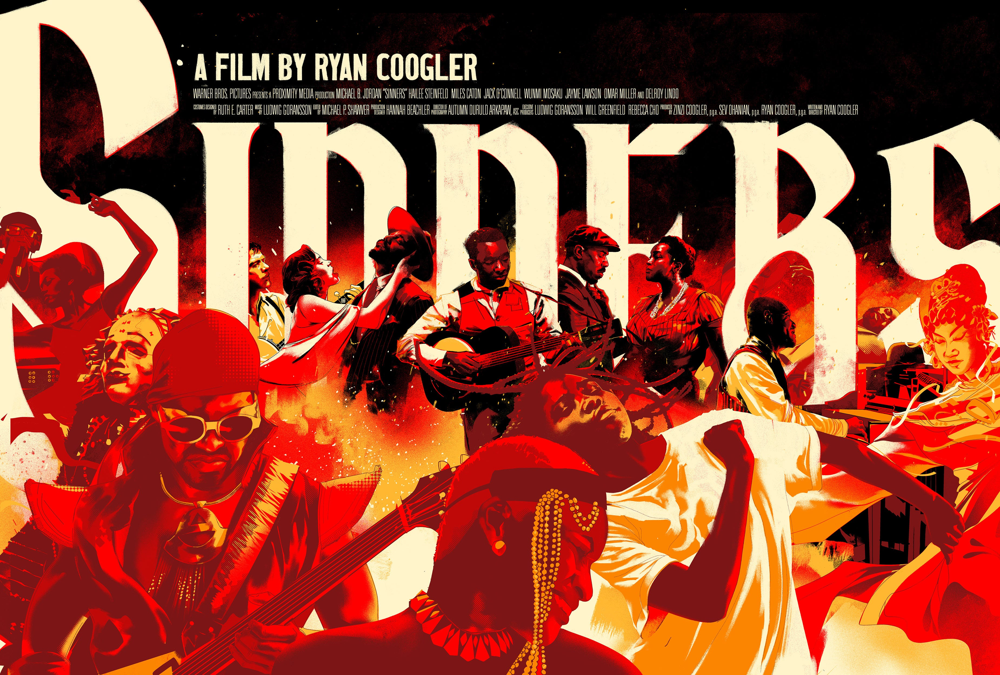
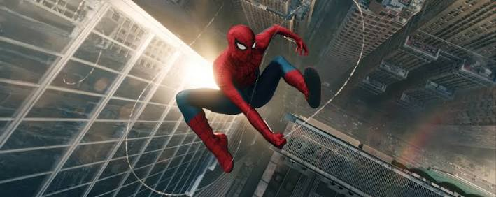
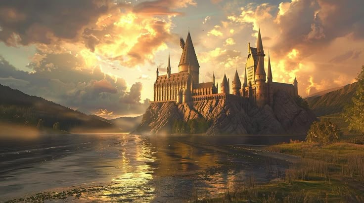

GENRE: Horror/Thriller RUNTIME 2h 17 mins RATING:
SYNOPSIS:
a supernatural horror period film directed by Ryan Coogler that follows twin brothers Smoke and Stack Moore (both played by Michael B. Jordan) as they return to 1930s Jim Crow-era Mississippi to open a blues juke joint with their musician cousin, Sammie. Their venture takes a terrifying turn when Sammie's powerful music summons an ancient Irish vampire named Remmick, sparking a brutal night-long battle for survival against an army of the undead and a local KKK plot. In a tragic climax, Smoke successfully eliminates the supernatural and mortal threats at the cost of his own life, while Stack is turned into an immortal vampire. Sixty years later in 1992, an ageless Stack visits an elderly Sammie in Chicago, offering him eternal life and fame, which Sammie ultimately declines in favor of his mortal legacy.

GENRE: Action/Adventure/Sci-fi RUNTIME: 2h 25 mins RATING
SYNOPSIS:
Four years after No Way Home, a deeply isolated Peter Parker fights crime full-time in New York City while completely forgotten by his loved ones, but the heavy physical and emotional strain triggers a terrifying biological mutation in his body. As he struggles to control his destabilizing powers and rising anger, an invisible psychic villain emerges with the ability to possess anyone in the city. To stop this mind-controlling threat and save New York from total chaos, Spider-Man is forced to consult with Bruce Banner to fix his condition and forge an uneasy, violent alliance with Frank Castle, the Punisher.

GENRE: Fantasy/Adventure RUNTIME 2h 32 mins RATING:
SYNOPSIS:
Harry Potter and the Sorcerer's Stone follows an eleven-year-old orphan who discovers on his birthday that his late parents were powerful wizards and that he possesses unique magical abilities of his own. Rescued from his abusive aunt and uncle, Harry attends Hogwarts School of Witchcraft and Wizardry, where he finally finds a true home, learns the basics of magic, and forms deep friendships with classmates Ron Weasley and Hermione Granger. However, his new world is quickly threatened when he uncovers a sinister plot involving a hidden, immortality-granting object, forcing Harry and his friends to navigate a dangerous labyrinth of magical traps to stop a dark force from rising again.